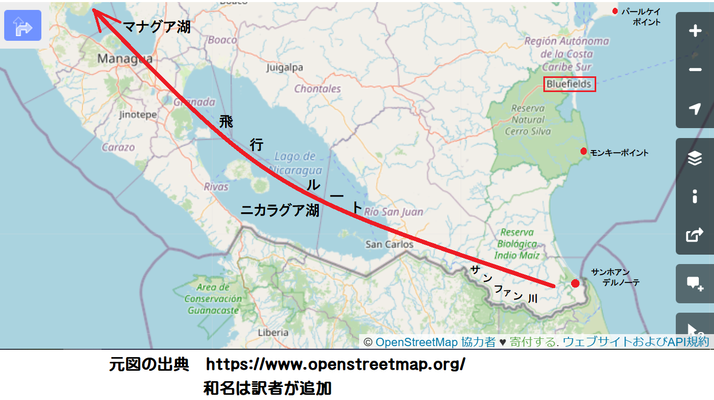
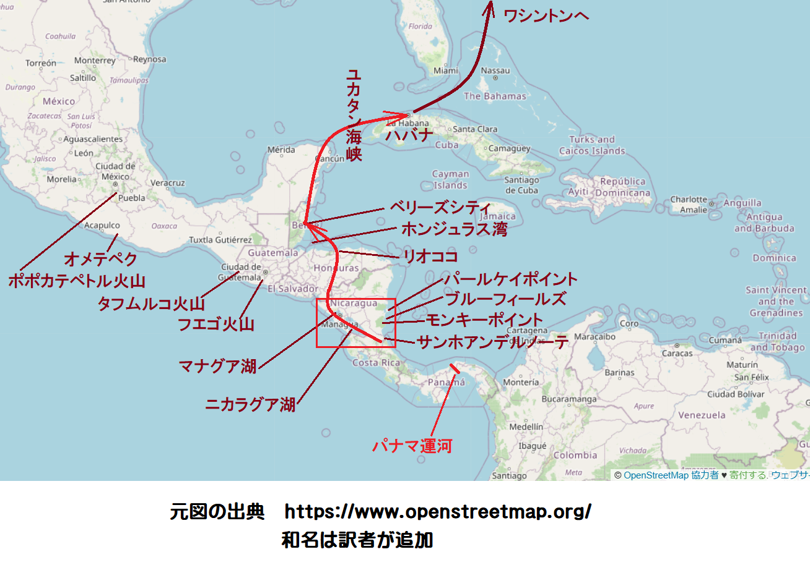

あとで分かったことだが、テッド・ウェリングは大惨事の数少ない目撃者、いやむしろ150万目撃者の中で、生き残った６人のうちの１人だった。そのときは災害規模がよく分からなかったけれども、心底最悪に見えた。
いまコーキスト号の機上にあり、ニカラグア湖が茶色の水をサンファン川へ流し込む地点のちょうど北に位置し、行先はマナグア、つまりニカラグア湖の120
 北西だ。機体下からは、エンジンのくぐもったブンブン音に加え、間欠的に３次元
北西だ。機体下からは、エンジンのくぐもったブンブン音に加え、間欠的に３次元実際それが唯一の飛行目的であり、その日の早朝サンファンデルノーテを離陸して、計画中のニカラグア運河上空を縦断する米地質調査所・地形測量部の飛行である。
もちろん米国は今世紀初頭からこのルートの権利を持っており、他国が野望を抱き、競合他社にパナマ運河の代替を開削させない担保にしている。
しかし今はニカラグア運河の検討中である。ひしめくパナマ水路は益々増大する膨大な航行にうめき声を上げ、問題はもう１本海面下25
 の巨大な溝を掘削するか、代替水路を開削するかとなった。
の巨大な溝を掘削するか、代替水路を開削するかとなった。ニカラグア水路は充分実現可能だ。サンファン川がニカラグア湖から大西洋にそそぎ、マナグア湖が太平洋から20
ほどの所にある。もう選定するだけであり、テッド・ウェリングは地質調査所の地形測量部に所属し、選定の手助けをしている。
発生は正確に10時40分だった。
も離れており、オメテペク活火山は現在高度からよく見える。毎週オメテペク火山がぴかっと光った白炎は太陽に負けず劣らず明るかった。一筋の
びっくりだ。爆発音の到達があまりにも早すぎる。あの距離なら数分かかるはず。そのとき、
東岸に巨大な波が砕け、バナナ園にいた人影が驚き大
必死に高度と格闘した。高度900
だったが、いま深い霧に覆われ、上昇流やら下降流やらエアポケットやらエアこぶやらで、位置がわからなくなった。高度計の針は気圧変化に震えて跳ね返り、ジャイロコンパスはぐるぐる回り、対地方向がまったくわからない。そこで、最善の方法で立ち向かい、空力の強弱に応じて変わるプロペラ音に聞き耳を立てた。下界では雷鳴のような
突然霧から出た。急に見通しのいい空中に飛び出たその
高度計は３千
を示している。広大なは気流がずっと安定していたが、依然として陰気な「ふー、何が起こったんだ」
もちろんこんな深い霧では着陸できない。執拗に北東へ飛んだ。波打つ白い煙幕が晴れれば、ブルーフィールズに飛行場があるからだ。
しかし霧がある。まだ燃料が半分残っているので、ひたすら北へ向かった。はるか向こうに１本の
３時間後、霧はまだ下にかかっていたが、しつこい煙幕が機体を
妙なことに、そのとき唯一後悔したのはケイ・ラヴェルにお別れを言わずに死ぬことだった。遠く離れたワシントンに父と滞在しており、父のジョシュア・ラヴェル卿は大英帝国大使だった。
高度計が60
を指した時、機体を水平に引き起こすと、列車がトンネルを抜けるように、視界が再び開けた。だが下は荒れ狂う西へ向かった。５分以内で、風雨に洗われる海岸へ来た。そのときだ、奇跡中の奇跡、町が、しかも滑走路が……。胴体着陸だ、プロペラを止め、暴風雨のなか、無我夢中で急降下した。
英領ホンジュラスのベリーズだった。空港名を確認した直後、係員が来て、一言。
「アメリカ人だ、運が良かったのう」
テッドも歯を見せて、
「ついてたよ。何が起こったんだ」
「地獄の
「ああ、見たぜ、真上にいたんだ」
「なら、もっと知っとるだろ。ラジオはおっ
突然雨が降りだした。激しくバタバタ打ちつける雨粒はビー玉ぐらい大きい。２人は格納庫に退避した。テッドの情報は乏しかったけれど、皆食いついた。というのも北回帰線下では大事件が
３日経って、テッドや世の人々は何が起こったかを一部知り始めた。数時間かかって、やっとベリーズからハバナを電波で呼びだし、テッドはワシントンのアサ・ガーン所長に報告した。うれしいことに、驚いたのはすぐ首都へ戻って来いという命令だった。だって、ワシントンでは楽しい生活が若手官僚に約束され、何よりケイ・ラヴェルに会うのは手紙を出して以来２か月ぶりだもの。
そこで、テッドはコーキスト号を飛ばし、ユカタン海峡をまたぎ、ハバナで乗り換えた。いま搭乗した快適なカリビアン大型航空機の行く先はワシントン、奇妙に煙る10月中旬の朝、着々と北上した。

そのときはケイのことを考えなかった。大惨事の新聞記事を食い入るように読みながら、あの真っただなか、どんな千載一遇の運が働いて無傷だったのかと不思議に思った。だって、この災難のために、影が薄くなり、
というのも、太平洋を囲む活火山の巨大輪は、たぶん月誕生の陣痛にまつわる最後の傷あとに相当するのだろうが、この熱い環状帯が火を噴いたからだ。アラスカのアニアクチャク火山は頂上が吹き飛び、富士山は溶岩を流し、大西洋のラスフリア火山と凶暴なペレ火山が再び目覚めた。
だがこんなのは小さい方だった。２か所の火山地帯、ジャワと中米の火山が真の脅威を見せつけた。ジャワで起こったことはまだ謎だが、もうパナマ運河は真っ平らになっていた。モスキート湾からリオココまで海になった。パナマの半分、ニカラグアの８分の７、およびコスタリカなど国全体があたかも存在しなかったかのよう。パナマ運河は大破。テッドが苦笑いして思ったのは、今となっちゃパナマ運河はピラミッドと同じ無用の長物だ。南北アメリカは分断、漂流し、パナマ運河はかつてのアトランティス島の仲間入り。
ワシントンでテッドはすぐアサ・ガーン所長に報告した。さばけたテキサス人の所長は体験を細かく聞いて、情報が足りないと不平を言ったが、事務所の夕会に出るように手短く命令した。午後まるまるケイに時間が割けたので、すかさずそうするつもりだ。
なかなかケイと２人っきりになれなかった。ワシントンは世界中の都市と同じように地震で騒然となっていたが、どの都市よりも無関心だったのは、150万人の死者や、なかんずく後遺症だった。結局、死者のほとんどが現地人であり、どこか遠くの悲劇、たとえば中国人が大量に死んだというような風だった。災害地域に友人や身内がいる人々だけが心配し、こういう人は少数派だった。
だが、ケイの自宅でテッドは、ある一団が自然現象の結末を熱く議論しているのに出くわした。明らかにパナマ運河の
の沈降海を通過できる。もちろん米国は通行料の収入源を失うが、防衛や補強に出資することがなくなったのでトントンだ。テッドがイライラしているとやがて、なんとかケイと２人きりになり、少し挨拶することができた。気が済んだので、残りの時間は熱心に議論に加わった。大惨事全体のなかで、誰も考えなかったある要因が、世界の歴史を変えかねないものだった。
テッドはその日の夕会でまわりを見て驚いた。出席者全員を知っていたが、理由が分からなかった。当然、地質調査所のアサ・ガーン所長は出席する。また、もちろんゴルズボロウ内務長官もいる。地質調査所が所管部門だから。だが、なぜ米国陸海軍長官のマクスェル長官がいるんだ。それになぜジョン・パレッシュ国務長官が押し黙り、
アサ・ガーン所長が
「皆さん方の中でウナギ好きな方は？」
と真面目に聞いた。
ざわめいた。
「ええ好きですよ。それがどうかしましたか」
とゴルズボロウ内務長官が答えた。かつてベニス領事を務めたことがある。
「じゃ買い求めてあした食べた方がいいですよ。もうウナギは手に入らないかもしれません」
「ウナギが手に入らない？」
「ええ、ウナギはサルガッソ海で育つことをご存知でしょう。その海がなくなったのです」
マクスウェル陸海軍長官がすごんで、
「なんだと、わしは忙しいんだ。サルガッソ海がないだと、ほう」
「もっと忙しくなりそうですよ」
とアサ・ガーン所長があっさり言い、眉をひそめて、
「もう１つ質問させてください。どなたかご存知ですか。英国ロンドンの向かい側は、アメリカ大陸のどこに相当するか」
ゴルゾボロウ内務長官がイライラして、噛みついた。
「どういう趣旨か知らんが、アサ君。私の考えではニューヨークとロンドンはほとんど同じ緯度じゃないかな。いやたぶんニューヨークの方が少し北かも。ちょっと寒いからね」
アサ・ガーン所長が
「ほう！ ほかに異論は」
無かったので、アサ・ガーン地質調査所長が、
「さて、間違ってますよ。ロンドンはニューヨークのおよそ１６００
も北で、南ラブラドルの緯度です」「ラブラドルか。実質、北極だ」
アサ・ガーン所長が後壁に大きな地図を下ろした。メルカトル世界地図だ。
「見てください。ニューヨークの緯度はイタリアのローマです。ワシントンの向かい側はナポリです。ノーフォークの緯度はアフリカのチュニス、ジャクソンビルはサハラ砂漠です。さて皆さん、これらの事実から導き出される結論はというと、来年の夏が世界史の中で最悪の戦争になるということです」
テッドは所長が正気だということを知っていたが、そのテッドですら、出席者の顔をまともに見られず、皆がありありと疑ってるのを見て取った。
マクスウェル陸海軍長官が咳払いして、どら声で、
「なるほど、なるほどな。戦争があって、ウナギがなくなる。簡単明瞭だ。だが、わしは大変申し訳ないけど失礼するよ。だろ、ウナギなんかにかまっちゃおれん」
「少しお待ちください」
とアサ・ガーン所長が制止して、再開した。そして４人は厳しい現実を少しずつ理解し始めた。
テッドがびくついて
「所長、確かですか。ほんとうですか」
「じゃあ、もう一度調べてみよう」
とアサ・ガーン所長が地図に向かった。大西洋の白線を指差して、
「いいかい、これが反赤道海流で、海岸を洗う地域は、グアテマラ、サルバドール、ホンジュラス、ニカラグア、コスタリカ、パナマだ」
「知ってます。その海岸上空を全部飛びました」
所長が青い大西洋を指して、再開。
「ああ、これは北赤道海流だ。大西洋から西に流れ、メキシコ湾にはいり、キューバ付近を通り、メキシコ湾流となる。平均流速は毎時６
、幅100、深さ180、そもそも平均温度は10℃だ」「そして、ここでラブラドル海流と出会い、メキシコ湾流は東へ向かい、西ヨーロッパ全体へ暖流を運ぶ。その為英国は住みやすく、南仏は亜熱帯で、ノルウェーやスウェーデンにも住める。テッド君、スカンジナビア半島を見てみろ。グリーンランドの中心、バフィン湾の緯度だ。エスキモーですらバフィン島で暮らすのは難しい」
テッドがうめくように言った。
「知ってます。しかし、残りの話も確かなのですか」
アサ・ガーン所長が怒鳴って、
「自分の目で確かめろ。壁がなくなったんだ。反赤道海流は毎時４
で、かつての中米の真上を流れ、キューバのちょうど南で北赤道海流とぶつかるようになるだろう。何が起こるか、メキシコ湾流に何が起こりつつあるか。つまり、大西洋沿岸を北東に向かわないで、かつてのサルガッソ海を真東に向かうようになる。北欧沿岸を流れないで、スペイン半島にぶつかる、つまり、ちょうど西風海流と呼ばれている今の海流のようになる。そして北へ向かわないでアフリカ沿岸に沿って南下する。毎時６
のメキシコ湾流が最後の暖かい海流をヨーロッパに運ぶのはあと３カ月もないだろう。１月に配達終了だ。１月のあとはどうなる？」テッドは何も言わなかった。
アサ・ガーン所長がびしっと再開、
「さてと、ヨーロッパのうちメキシコ湾流に依存する国々は、ノルウェー、スウェーデン、デンマーク、ドイツ、英国諸島、オランダ、ベルギー、フランス、その他数ヶ国だ。６か月もたたないうちに、テッド君、ヨーロッパの再編が見られるだろうよ。メキシコ湾流依存国はガラガラポンされる運命だ。つまり
「い、いいえ」
「いま名を挙げた国々の人口が２億人以上だからだよ。２億人だぞ、テッド君。もしメキシコ湾流が無くなり、英国やドイツがラブラドル気候に、フランスがニューファンドランド気候に、スカンジナビアがバフィン島の気候になれば、
「さあ」
「どこへ行こうとするか教えてやろう。英国は余剰人口を植民地へ移住させるだろう。インドは過密だから、南アフリカ、カナダ、豪州、ニュージーランドで吸収できる。見立てでは英国人口５千万人のうち２千５百万人が可能だ。カナダ北部や豪州砂漠に膨大な土地がある。フランスは北アフリカがあるが、既にほぼ満杯だ。ほかの国々は、さあ、言ってみろ、テッド君」
「シベリア、南米、アメリカ合衆国だと思います」
「いい勘してる。だから露仏がもう親友じゃなくなる。南米は抜け殻の国、つまり貝殻だ。内陸は白人には不適。だから残るのはシベリアと北米だ。なんと、戦争が起こるぞ」
テッドが口ごもり、
「信じられません。やっと世の中が落ち着いてきたと思ったのに」
アサ・ガーン所長が反論して、
「いや、前にも起こった。戦争になったのはこの気候変動が初めてじゃない。かつて中央アジアで降雨量が減ってフン族がヨーロッパへ移動したし、おそらくゴート族やバンダル族もそうだ。だが２億人の文明社会で起こったことはない」
と一息入れて、
「どの新聞も中米の150万人死亡のことを一斉に書き立てている。来年の今頃は、150万人死亡記事が見出しになったなんて、すっかり忘れている」
テッドが思いっきり、
「いやはや。何かできることはないのですか」
アサ・ガーン所長が、
「ある、ある。うまい具合に役だった地震を調べてくれ。今回沈んだ10万平方
 の地面を持ち上げたような地震だ。それが君の仕事だ。見つけられなければ、マクスウェル陸海軍長官の
の地面を持ち上げたような地震だ。それが君の仕事だ。見つけられなければ、マクスウェル陸海軍長官のアサ・ガーン所長は間違いなく、中米災害の
議会がたった１回だけ警告に注目したのは、ラスマー上院議員が季節外れに暖かい天候を取り上げて、メキシコ湾流が今年は早々に向きを変えたのじゃないかと淡々と質問したときだった。時折、海洋学者のなかにもフィニアス卿に同調して暴露本を書くものもいた。
そうこうしてクリスマスが粛々と近づいた。テッドはワシントンに駐在して幸せいっぱい、昼は事務所で職務の地形図を作製し、夜はケイ・ラヴェルの許す限り一緒に過ごした。そして、だんだん
もう２人の間では婚約したのであるが、都合のいいときに父のジョシュア卿に話すだけとなった。娘のケイにとっては、父の承認が英国の伝統保守階級では必須なようだ。
テッドの気がかりはアサ・ガーン所長の暗示した悪い未来図であったが、ケイには言うまいと心に誓った。一度、ケイがフィニアス・グレイ卿の警告を何気なく持ちだした時、テッドはくだらないとごまかし、
１月14日に最初の寒波が欧州を襲った。ロンドンは終日、前代未聞の-30℃に震え、パリは大寒波を身振り手振りで声高に論争した。そのあと高気圧が東へ移動し、平温に戻った。
だが長続きしなかった。１月21日には別な極低温の帯が偏西風に乗ってやってきた。英国新聞や大陸新聞は国会図書館で慎重に調査して、動乱の
『なるほどフィニアス・グレイ卿は異常だ。なるほどそうだが、ひょっとして正しかったかも。ひょっとしたらだ。こういうことが考えられなくはないか。新聞発行都市により異なるが、独、仏、英、ベルギーの安全と主権を左右するのは、１万
離れた狭い帯状地域の乱れじゃないのか。独、仏などは自らの運命を決めなければならない』第３波の北極寒波が来ると、論調は大っぴらにおびえだした
『おそらくフィニアス卿が正しい。じゃあ何、何をすべきか。噂や
テッドは、アサ・ガーン所長の予言が鋭い判断に基づいていたことを分かり始めた。つまりドイツ政府が敏感な国境問題について、フランスに公然と友好的なそぶりを見せ、フランスも同じく寛大な声明を返した。ロシアは抗議したが、やんわりと無視された。ヨーロッパは確実に再編されつつある。それも、ものすごく急激に。
だがアメリカはワシントンの悩み深き一団を除き、事件にはうわべだけの関心しか持たなかった。貧者の困窮記事が２月の第１週に出始めると、救済募金活動に拍車がかかったが、わずかな成果しか得られなかった。
人々は単に関心がなかった。厳冬といっても、洪水とか火災とか地震などのように、劇的に訴える力がない。だが新聞報道に増え出した不安材料は、６年間未達の移民割当人数が再び満杯になり、メキシコ湾流の国々から移住が始まったとか。
２月の第２週になると、激しい動揺が欧州に起こり、さすがに尊大なアメリカにも影響が跳ねかえり始めた。列強の再編成が今や公然かつ明確になった。
スペイン、イタリア、バルカン諸国、ロシアが同盟を組んだ。北と西に脅迫的な積乱雲が出てきたからだ。ロシアはたちまち日本との積年の争いを忘れ、日本も妙なことに自ら進んで怒りを捨て去った。
お互いの思惑が奇妙に変化した。大面積、少人口の国々、つまりロシア、アメリカ、メキシコ、南米などがじっと見つめる欧州は逆上しており、夏が来れば有史以来、大量の移民を送り込もうと待ち構えていた。
族長アッティラと、フン族集団であるモンゴルが大挙して中国を滅ぼした事件、さらに白人が大量に南北アメリカへ移動した事件すらもみな、いま脅威にさらされている侵入に比べれば、取るに足らない。強大な武力を持つ２億人もの人々が、世界の空白地帯を、気が動転してにらんでいる。どこに最初に雷が落ちるか誰も知らないが、落ちることに疑いはない。
欧州が信じられないような厳冬に震えている間に、テッドもまたある私情のために震えていた。半狂乱の世界がテッドに跳ね返り、ここアメリカでその縮小版が出現したのは大英帝国の申し子、ケイ・ラヴェルであった。２人の思いはそれぞれの国家に
秘密にするときは終わった。ケイの家に行き、暖炉の前でケイに向かいあい、赤々と燃える炎とケイの顔をじっと眺めていると、キラキラ輝く顔を見るだけで、テッドの
テッドが白状した。
「ああ、知ってたよ。パナマ運河地震の２〜３日後には知っていた」
「それならどうして私に教えなかったのよ。教えるべきよ」
「出来なかった。言わないと誓ったんだ」
ケイがなじった。
「ずるいよ。なんで災難が英国に降りかからなきゃならない？ メラクラフト地方が雪の中で、古代バイキング塔みたいに、突っ立っているのを考えるだけでも病気になる。テッド、私はウォリックシャー州で生まれ、父と祖父も、先祖もよ。そして家系は征服王ウィリアムの時代までたどれる。母のバラ園がツンドラみたいな不毛地になって、うれしいと思う？」
テッドは
「申し訳ない。しかし、どうしようもない、誰にも。ただきみが大西洋のこちら側にいるのでうれしいよ、安全だからね」
ケイが真っ赤になって、
「安全ですって。ええ、私は安全よ。でも英国民はどうなのよ。アメリカは安全で、運がいい、選ばれた国よ。どうして英国が苦しまねばならない？ メキシコ湾流は米国沿岸も洗うのに。なんでアメリカ人は寒さに震えず、こごえず、怖がらず、希望に満ち、温暖で、快適で、無関心なの。これって公平かしら」
テッドは苦しげに説明した。
「メキシコ湾流が米国にそれほど影響を及ぼさない理由は第１に欧州よりずっと南に位置しているからさ。第２に
「それってずるい、公平じゃない」
「ケイ、僕に出来ることは？」
ケイは不意に沈んで、それから再び怒って、
「ないと思う。でも米国民は何かできるはずよ。ここを見て、いい」
ケイが１週間遅れのロンドンタイムズを見つけ、素早く指差し、テッドに見せて、
「いい、ちょっと聞いて」
『人道上の名において姉妹国の門を開けろと強要しているのではない。我々をインディアン
我々がもたらす大きな購買力はアメリカの製造業者のためになるし、全員、財産を携帯するだろう。そして国土防衛戦争になれば、最終的には熱烈な大防衛軍となるだろうし、戦争はいまや不可避のようだ。英国の言語は米国と同じだし、当然の論理的解決策として特に考えるべきは、テキサス１州だけでも、地上の男・女・子供１人当たり、２５００坪を割り当てられることだ』
ケイが一息ついて、テッドをにらみつけて、
「どう？」
テッドは鼻じろみ、ぴしっと言ってやった。
「インディアンとバッファローか。合衆国でどっちか見たことあんの」
「いいえ、でも……」
「そのテキサスだが、確かに世界中の人間１人当たり２５００坪の土地があるけれど、なぜ、きみらの編集者はその２５００坪の大部分で牛１頭すら
「そうかもしれないけど……」
「それに大購買力の市民だが、所持財産と言ったら金塊か紙幣じゃないの。金塊はいいが、英国の信用保障なしに１ポンド紙幣が何になる。大量の新市民は単に失業者を増やすだけだ。やがて米国産業が雇うかもしれんが、何年もかかろう。一方では賃金がゼロに下がるかもしれない。労働力がものすごく余るから。食料と家賃は高騰するだろう。何百万人もの余分な胃袋を満たし、寝場所を供給するためにね」
ケイが冷たく言い放った。
「わかった。好きなだけ言いなさい。一歩譲って正しいとしても、間違いが１つある。残された５千万英国民が飢え、凍りつき、苦しんでいく中で、気候の行き着き先は北極よ。あんたらアメリカ人は暖房なしのあばら家に住む貧しい一家のことを新聞が書けば騒ぎ立てるくせに、１つの国がまるまる暖炉を失ったイギリスはどうなのよ」
テッドが真面目に反論した。
「暖炉を失くしたほかの７〜８カ国はどうなの？」
ケイが怒りをあらわにして、
「英国には優先権がある。米国は言葉も、文学も、法律も、文明も全て持っていった。だから今でも英国植民地に過ぎないはず。ほんとのことを知りたければ、それがすべてよ」
「我々の考えは違う。とにかく、きみも知っているように、合衆国は１国に門戸を開け、他国を排除することはしない。全てかゼロ、つまりゼロということだ」
ケイが厳しい口調で、
「だから戦争になる。ああ、テッド、どうしようもない。向うにおばや、いとこや、友人がいる。ひどい目にあってるのに私が無関心で傍観していられると思う？ 事態が進んで、もう駄目になっている。既に土地は無価値になった。今となってはタダでも売れない」
「わかるよ、すまん、ケイ。でも誰のせいでもない。誰も非難できない」
「だから誰も何もしなくていいの。それがアメリカの親切な考えなの」
「公平じゃないよね。でも、我々に何ができるんだ」
「私たちを入国させられるでしょ。ところが実際は入国するために戦わなければならない。私たちを非難できない」
「ケイ、アメリカにはどの国も、どの一団も侵入できない。たとえ我が国の海軍が全滅しても、敵軍はどれだけ海上を進めると思うか。ロシアへ進軍したナポレオンの再現だろう。進軍したら飲み込まれる。それに欧州のどこで食料を見つけて、侵略軍に補給するの。移動先で生き延びられると思うか。言ってやろう、正気な国家ならそんなことはやらない」
ケイが猛烈に言い返した。
「たぶん正気な国家ってないよ。まともな国家を相手にしてると思っているの」
テッドは気が滅入って肩をすくめた。
ケイが続けた。
「みんなやけくそよ。非難できない。何をされようが自らまいた種よ。たとえ大英海軍が米側に
「ケイ、きみとはケンカできないよ。気持はよく分かる、それに最悪な立場も。でも全面的に賛成したとしても、それは無理なことだが、僕に何ができる。大統領でもないし、議員でもないし。今夜は議論をやめようよ、ケイ。
「
テッドがやさしく
「ケイ、すべてかい。忘れていないかい、きみにも大西洋のこちら側で何かあるんじゃない」
ケイが冷静に、
「何も忘れてない。すべて話した。本気よ。アメリカは大嫌い。そう、アメリカ人もよ」
「ケイ」
ケイが怒って、
「もうひとつ、アメリカ人とは結婚しない。パナマ運河を再建したとしてもよ。もし英国が凍れば一緒に凍る。そして英国が戦えば敵は敵よ」
ケイは不意に立ち上がり、困惑するテッドの顔にわざと目をそむけ、部屋からプイと出て行った。
大混乱した２月の数週間、テッドは時々、議会の傍聴席に足を運んだ。やる気満々の議会は、秋の再選に向け、国家の中でも熱気渦巻く要所であり、分科会で声高に論争していた。
通常案件は無視され、連日、両院一体になって、どう見ても無効だとしか思われない前代未聞の緊急動議を審議し続けた。千差万別の風変わりな法案が提案され、審議、保留となり、
年初の献金ブームに乗って、中間選挙では多数派の保守党が楽勝したが、真っ当な政策はなく、少数派の労働党や左派の提案は否決され、代替案もなかった。
不思議な議会史の中でも、一番奇妙な法案がいくつか、この時期に現れた。テッドは左派の提案に聞き入った。
アメリカ人の１家族につき２人の欧州人を受け入れて収入を３分割する。望むらくは欧州人は自発的に不妊手術を受けて、非常事態を１世代に制限する。
またある突飛な新聞によれば、アラスカ州選出の上院議員が紙幣計画を発表し、魔法の計算式を適用して、欧州人に生活費を支給し、世界を破綻させないという。完璧な救済法のように思われたが、２億人もの人々へ寄付をするというのは明らかに尻込みするもので、どっちみちこの提案はほとんど注目されなかった。
しかし両院を通過した幾つかの法案は、議論されることなく、左派からも労働党からも保守派からも支持された。その断固たる予算とは潜水艦や重爆撃機や迎撃戦闘機や空母の予算であった。
ワシントンは妙に忙しい日々となった。うわべは依然として華やかな社交場で、あぶくのように群れ
でもいくら
気づいたのはテッドだけじゃなかったし、あらゆる行事に湾流国家の外交団がいないのは、かえって目立った。ただし、重要行事のなかで、湾流国家外交団が出席して政策決定する場合は別だ。そして、そんな場合にも事件は起こった。
テッドがいるとき、フランス公使が部屋から怒って出てきた。その理由というのは主催者側の
テッドはケイに会えなかった。ケイの父は必要があれば出てきたが、ケイはあの日突然拒絶してからは現れなくなり、父のジョシュア卿に尋ねても、ただよそよそしいあいまいな言い訳をして、気分がすぐれないという。だからテッドはイライラ、一人悶々とし、ついには自分の立場が重要か、世界が重要か、分からなくなってしまった。突き詰めれば当然ながら、両者は同じ。
世界はヨウ化窒素結晶のようで、夏の乾燥を待ち、爆発するばかりであった。欧州の
小国ハンガリーは陸軍を西に集結させ、明らかに目的はオーストリア併合部に集結した敵軍への対抗であった。この報告に関し、テッドが聞いたのはマクスウェル陸海軍長官が安堵の表情を浮かべて述べた談話だ、つまりドイツは
だが海洋国家の戦略は別だった。特に強力な大英帝国は世界防衛艦隊を日に日に大西洋に集結させた。実際大西洋は込み合った。というのも西岸には米国戦艦が集結しており、米国艦隊は最終的に強化条約に基づき建造され、それをはるかに上回る規模になった。
一方、北方や南方に集まった船はわずかばかりの蒸気しか上げられず、乗船した運のいい人々が故郷の欧州を捨て、希望の国々へ向かった。
欧州の植民地がどこにあろうが、アフリカとオーストラリアはかつてない大量の移民を受け入れている。でもこれらの移民はほんの一握りであり、たっぷり流動資産を持ち、旅ができる人々であった。何百万人という無数の人々が自宅を離れられないのは土地が売れない、事業に投資している、未練がある、あるいは単に金がなくて家族の旅費が買えない等の理由だ。
そして被災国内で必死に希望にしがみつく人々は、この信じられないような極寒ですら、やがて危険は去り、最後には良くなるだろうと信じていた。
愚直で小国のオランダが、おおやけに全人口の移住を発表した最初の国家だ。テッドもその文書、少なくとも２月21日付け新聞記事を読んだ。実質上、ケイがロンドン紙で読んだ主張の繰り返しに過ぎなかった。
博愛を口実にしたり、善良市民だ、技術市民だと主張したり、友好を強調したり、友好はいつも２国間にあるとか云々。そして非常事態のために、緊急回答を求めて、交渉は打ち切られた。まさに緊急回答が到着しようとしていた。
回答は新聞にも発表された。上品かつ、とても洗練された微妙な文体で記された内容とは、米国が１ヶ国の国民だけを受け入れて、他国を排除することはない
国籍法の条項に基づき、オランダ移民は割当人数いっぱい受け入れられよう。さらに割当人数を増やすことも可能だろうが、全廃はない。事実上、外交的には体のいい拒絶であった。
３月が南西風にのってやってきた。南部の州に春をもたらし、ワシントンにもかすかに暖かい気候の兆しがあったが、メキシコ湾流の国々は北極気候から
ただ南フランスのバスク地方だけは、ピレネー山脈から、湾流の暖かいつむじ風が時折吹き込み、厳寒の縛りが解放されるような兆候があった。しかし、あくまで気配だ。４月が来て、５月も来るだろう。そして世界は戦争に備えて、鋼鉄の筋肉をぴくぴく動かすだろう。
いまやみんな戦争が差し迫っていることを知った。最初の文書と回答が数件公表されたあとは一切新聞に載らなくなったが、代表団の声明やメモが列強間で白鳩のようにあたふた飛び交っていることは皆知っていたし、少なくともワシントンにいるものなら知っていることだが、メモの
テッドは、観察に抜け目はなかったが、それ以上どうしようもなかった。延々とアサ・ガーン所長と語り合った。さばけたテキサス人の所長は自分の予想を立証したのであるが、もう騒動の
当然ながら地質調査所は関係ないからだ。そして地質調査予算が急激に減らされ、そんな肩身の狭い思いを共有する政府機関は、国土防衛に無関係な部署だった。
アメリカ国中はもとより、さらに西欧を除く国々が、熱に浮かされたように異常で熱狂的な活気に包まれた。欧州から資本が逃避したり、食料をひっきりなしに
この緊急事態において、フランスおよびその主権下にある国々は、第２次フラン切り下げ以来、金塊にひどく執着しているので、いまや圧倒的な優位に立った。だって、金塊なら小麦や牛や石炭が大量に買えるもの。でも、特に英国のような紙幣国家は、小さな石の家でも、
３月11日、忘れもしない火曜日、ロンドンの気温が-33℃に下がった時、テッドは６週間も苦闘した挙句、ある結論に達した。自尊心をぐっと飲み込み、ケイにまた会いに行った。
ワシントンスズメのうわさでは、ジョシュア卿が
だが、テッドを悩ましていたものは、ずっと個人的な問題だった。もしジョシュア・ラヴェル卿がロンドンに
欧州はどうやら破滅が運命づけられた。だって何千
もの海原を越えて侵入なんて出来っこないもの。だが欧州の一部分でも救えたら、それが肝心だが、そしてどうにかしてケイ・ラヴェルを救うことができたら、自尊心も何も犠牲にする価値がある。そこでもう一度電話をすると、使用人がつっけんどんな返事をするので、
ベルを鳴らすと、先ほどの使用人が冷たく、
「ラヴェルお嬢様はおりません。お電話で申し上げました」
「待つさ」
とテッドがきっぱり返し、玄関扉から中にはいった。ホールの椅子にぽつんと座り、使用人をにらみつけ、待った。５分もたたないうちにケイが現れ、階段をとことこ降りてきた。
「帰ってちょうだい」
とケイが言った。青ざめて困っているようなので、急に同情した。
「帰らないぞ」
「どうすれば帰るの。もう会いたくない、テッド」
「ほんの半とき話を聞いてくれりゃ、帰る」
ケイがやれやれと折れて、居間に案内した。そこは皮肉にも火がパチパチと盛大に燃えている。ケイが聞いた。
「それで？」
「ケイ、僕が好きか」
「い、いいえ」
テッドがやさしく、
「ケイ、僕と結婚して安全なここに住んでくれ」
ケイの茶色の眼に不意に涙が光った。
「嫌いだ、すべて嫌い。ここは殺人国家だ。東インド強盗団みたい。ただ殺人教を叫び、愛国心だと言ってる」
「きみとケンカしたくない。ケイ、きみの意見は責められない。僕のことが分からなくてもいい。それでも、僕が好きか」
突然、弱気になって、
「分かった、好きよ」
「じゃあ、僕と結婚してくれるか」
「ダメ、ダメ。結婚しない、テッド。英国へ帰るから」
「じゃあ、いま結婚してくれないか。帰英させるから、ケイ。そのあとは、何か起きても世界が残っていれば、きっとここに連れ戻せる。僕は信念の為に戦わなければならない。敵同士の間は一緒にいてくれと頼まないが、そのあと、きみが妻なら、ここに連れ戻せる。そうじゃないか」
「分かった、でも、できない」
「なぜだ、ケイ。好きと言ったじゃないか」
ケイが
「好きよ。嫌いだったらよかった。そうすれば結婚しなくて済む。アメリカ人のやり方が嫌いなの。もし、テッドがイギリス側だったら、あした、いや今日、いや今から５分後でも結婚する。でも今は結婚できない。正直じゃないもの」
テッドがふさぎこんで答えた。
「裏切り者はいやだろう。ケイ、１つ確かなことは、きみは裏切り者を愛せない」
と一息置いて、
「それじゃあ、お別れかい？」
ケイの眼にまた涙が流れた。
「ええ。まだ
テッドがつぶやいて、
「きっと戦争になる。ケイ、何はさておき、本当にすまない。気持ちは責められない。きみが心変わりするはずはないし、以前のケイ・ラヴェルのままだけど、どうしようもない。くそ、どうしようもない」
ケイは黙ってうなずいた。しばらくして、
「テッド、私のことも考えて。故郷へ帰るってことはそうね、南極のロックフェラー山脈に行くようなものよ。いっそのこと、イギリスは海に沈めばよかった。その方が南極よりずっと良かった。もしも、ベン・マクドィ山頂を波が洗うまで沈んだら……」
ここでケイが一息入れた。
テッドが悲しげに答えた。
「波はベン・マクドィ山頂よりずっと上を洗うよ。波は……」
といいかけて突然止めて、びっくりしてケイを見つめた眼には、一条の希望の輝きがあった。
「シエラ・マドレ山脈だ、母なる山脈、シエラ・マドレ、シエラ・マドレだ」
とテッドが叫び、あまりの怒鳴り声に、ケイが後ずさり。
「何ですって」
とケイがあんぐり。
「シエラ・マドレ……、いいか、ケイ、聞いてくれ。僕を信じてくれ。きみに、何か、何か、我々２人の為にやってくれ。いや我々の為じゃない、世界の為だ。やってくれ。ケイ、きみならやれる。お父さんの
「方法は？ どうやって？」
「さあ。とにかく、どんな方法でも。病気になってくれ。重病で旅ができないと言って、動けるまで召還を公表しないよう、お父さんに頼んでくれ。いや、お父さんにこう言いなさい。米国が数日中に代替提案をすると。これは本当だ。誓うよ、ケイ」
「でも、でも父は信じない」
「信じるはずだ。やり方は任せるけど、お父さんを足止めしてくれ。そして英国外務省にこう報告させろ。新展開、とても重要な展開が生じたと。本当だ、ケイ」
「本当なの。それを教えて」
「説明する時間がない。頼んだよ」
「やってみる」
「たのもしいぜ」
とテッドがかすれ声で言い、ケイの悲しそうな茶色の瞳を見つめ、軽くキスして、大急ぎで出て行った。
アサ・ガーン所長が死海ソルトン湖の地図をにらんでいるとき、テッドがアポ無しで事務所に駆け込んできた。長身のテキサス人所長が眼を上げ、不作法な入室者に軽く会釈をした。
テッドが大声で叫んだ。
「わかりましたよ」
アサ・ガーン所長もうなずいて、
「最悪だな、何が分かったのか」
「いいえ、と言うか、あのう、パナマ運河の上を音波探知しましたか」
「ドルフィン号が何週間もそこにいる。昼飯の間に、10万平方
の海底図は造れないぞ」テッドが大声で、
「どこを音波探査しているんですか」
「当然、パールケイポイント、ブルーフィールズ、モンキーポイント、サンファンデルノーテの海上だ。何はさておき、かつて町だった所を音波探知している」
テッドが緊張して震え声を抑えながら、
「ええ、当然ですね。で、マーリン号はどこにいますか」
「ニューポートニューズに停泊中だ。今年の予算じゃ２
テッドが急に怒りだして、
「予算などくそくらえ。マーリン号も使え、電気水深測器を積める船すべてだ」
アサ・ガーン所長が事務的に、
「了解、直ちに。ところで、君はいつゴルズボロウ内務長官を解任したんだ、ウェリング君」
「すみません。命令するつもりはありませんが、考えついたのです。現状の大混乱からすべてを救いだす方法です」
「ほんとかい。ちょっと面白そうだな。国際決定とは別口か。資金計画か」
テッドが興奮して、
「違います、シエラ・マドレですよ。分かりませんか」
「
「じゃあ、聞いてください。僕は沈没地域上空を隅々まで飛んできました。測量し、写真を撮って、地図を作りました。沈んだ陸地帯は自分の寝床の凸凹と同じくらい良く知ってます」
「それはおめでとう。で、それがどうした？」
「これです」
とテッドがきっぱり。壁に向き直り、中米の地形図をおろし、話し始めた。しばらくアサ・ガーン所長が椅子から身を乗り出していたが、薄青色の瞳に奇妙な光が輝いた。
その後のことは、あまたの歴史家が様々な方法で記録し、解説している。ドルフィン号とマーリン号が、コルディレラ山系の沈下軌跡を大車輪で音波探知し続けた話は、そのまま第一級の冒険物語となっている。
秘密外交があり、大英帝国が中立を保ったので弱小海軍国があえて５千
の海原を越えて戦争を仕掛けなかったことも、もう１つの伝説であり、決してだが、なかでもとりわけ素晴らしい物語、つまりコルディレラ大陸間・城壁を建造したことは、
音波探知で、海底のシエラ・マドレ山脈をジグザグに追跡した。テッドの推測が正しかった。山脈の頂上は海面下からさほど沈んでいなかった。反赤道海流ルートが見つかり、深さはどこも70
以下だった。３月31日に始まった城壁建設は超特急、工事は
９月終わりごろになると、長さ300
ほどが海面上に現れ、頑丈な城壁は一番狭いところで幅20、高さは最高部で70、平均高30になった。まだ半分しか完成してないとき、北極の冬将軍が欧州を襲ったが、建造半ばでも決定的な城壁となった。片方を反赤道海流が洗い、もう片方を赤道海流が洗い、２つが合流してメキシコ湾流となってゆっくり欧州へ向かった。
そして、100
表向きコルディレラ大陸間城壁はアメリカが建設したことになった。善良で愛国的な新聞の多くが嘆き悲しんだのは、アメリカが欧州の為に５億ドルを負担して、またしてもカモになったことだ。
誰も気づかなかったのはこの計画のために連邦議会が予算を計上しなかったこと、ましてや誰も不思議に思わなかったのは大英帝国海軍がトリニダードやジャマイカやベリーズの基地に英国大西洋艦隊の大部分を停泊させたことだ。
そればかりか、これに関して誰も疑問に思わなかったのは、廃止された戦債が突然再発行され、欧州列強が喜んで落札したことだ。
歴史家や経済学者の中には
テキサス南端、フロリダ、プエルトリコ、運河地帯などから１千機の飛行機で爆撃すれば、城壁は破壊できるかもしれない。だが、欧州国家でそんな危険を冒そうとする国はない。
そのうえ、世界のどこにも、更にはメキシコ湾流が気候に影響しない東洋ですら、あえてアメリカに戦争を仕掛けようとする国はない。たとえば日本が宣戦布告でもすれば、欧州の全軍事力が立ち向かうだろう。欧州はコルディレラ大陸間城壁を攻撃する意思はこれっぽちもないし、そもそもアメリカと戦争する国はまず、この城壁を強行突破しなければならないだろう。
事実上アメリカは欧州の軍隊を数機の爆撃機で攻撃できる。ただし平和主義者なら、そんな企てはおくびにも出さないけれど。かくして、このような結果をもたらした城壁は、公式にはコルディレラ大陸間城壁と呼ばれていたが、新聞はこぞって発案者に
真夏ごろやっと、テッド・ウェリングは結婚とハネムーンを考える余裕ができた。ケイと一緒にハネムーンを過ごしたのがカリブ海、この危険な海を全長15
の頑丈な２人が楽しい時間を過ごしながら眺める先に、大型の
を埋めている。そしてある日、２人が水着を着て船上で肌を焼いているとき、テッドがケイに尋ねた。
「ところで、僕には話してくれなかったけど、どうやってお父さんのジョシュア卿をアメリカに留まらせたの？ おかげさまで開戦が引き延ばされ、このようなことが実現できた。どうやったの」
ケイがえくぼを作って、
「ええ、はじめ、父に病気になったと言ったの。ひどく悪いって」
「お父さんは引っかかっただろ」
「いいえ、航海に出れば治るだって」
「つぎに、どうした」
「そうね、父はキニーネに対してある種の特異体質なの。インドに赴任したとき毎日キニーネを飲まなければならなかったから、
「それで」
「分からないの？ 父の食前カクテルやら、ワインやら、お茶やら、砂糖や塩にまでキニーネを少し混ぜたのよ。食事するたびに、苦いとこぼしたけど、それは消化不良のせいと嘘ついたの」
「それから？」
「もちろん、消化カプセルを買って、中の薬を抜いて、キニーネを一服盛った。すると２時間後に
テッドが吹きだして、
「それで居たなんて言うなよ」
ケイがすまして、
「それだけじゃない。知り合いの医者を呼んだ。この医者というのが私に求婚し続けていたので、お金を少し握らせて父に病名を告げさせた。丹毒症と言ったと思う。とにかくなんか激しい接触伝染病よ」
「それで？」
「それで、私たちは２週間隔離された。その間、父にキニーネを投与し続けて、はったりを噛ました。だから厳重に隔離された。
完